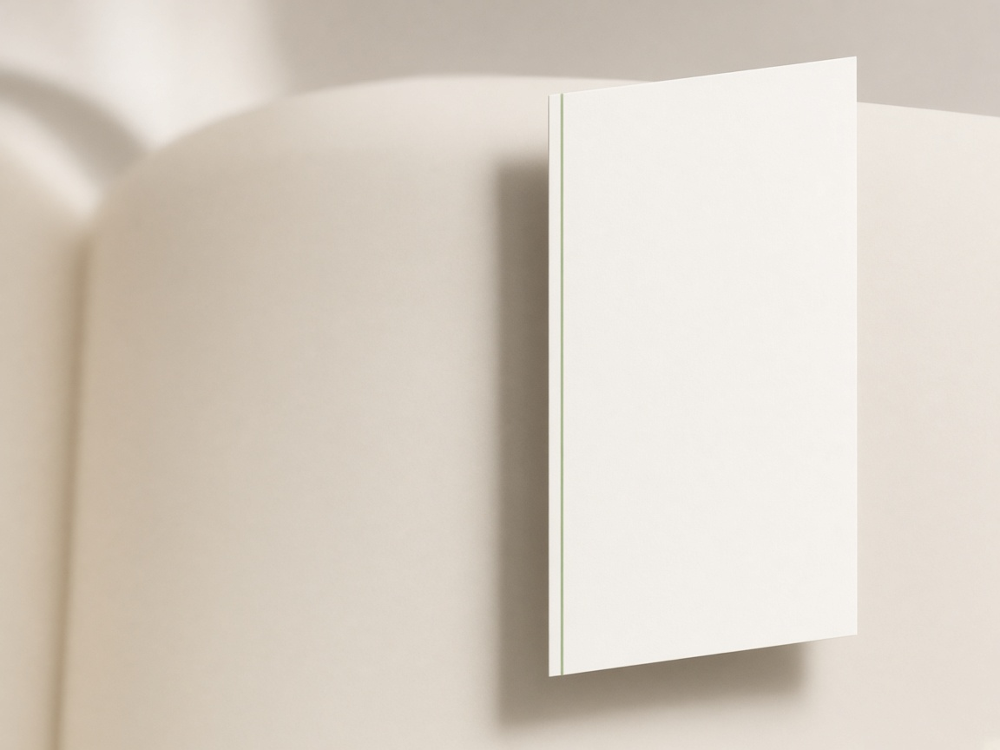
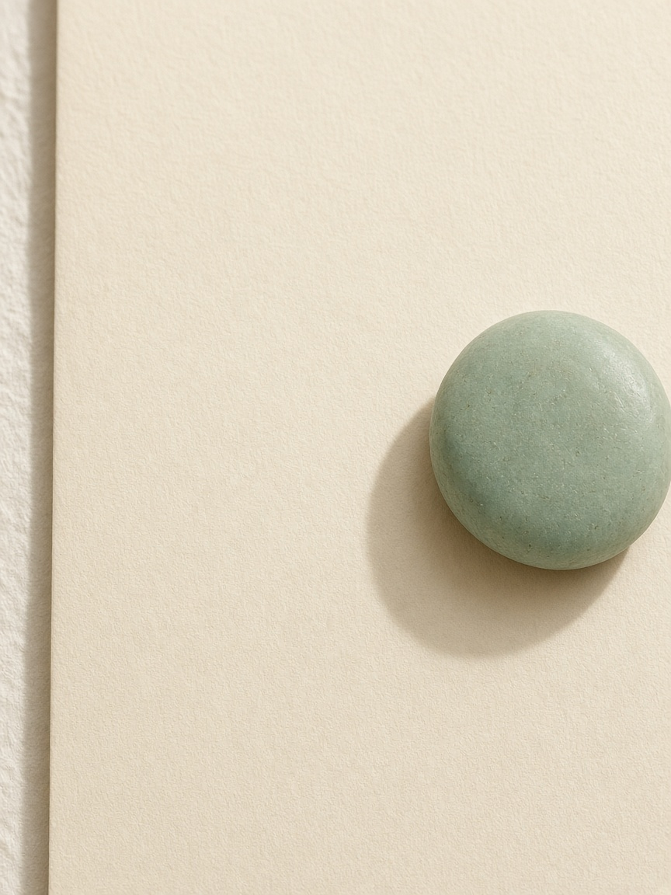

划词翻译
选中，就译成中文。
短句停在文字旁边。长文在页面右侧展开。某一段没有译成，留下一句安静的话，你可以再试一次。
一句，停在旁边。
在网页上松开鼠标，译文出现在选区附近。纯中文不会被打扰。也可以关掉自动翻译，改成先看到一个按钮，点了再译。
点到弹层外面，或按 Esc，这条短译文会收起。页面滚动时，它跟着选区走。
一篇，在旁边读完。
超过 500 字，或按下 ⌘ A，右侧滑出侧窗。里面只有中文。点一段译文，原文会亮起来；点原文，侧窗会滚到对应的一段。

左缘可以拖宽，最宽到页面的一半。点空白处，或按 Esc，侧窗收成一枚圆球。译文还在，点一下就回来。
译
收起不是关掉。它只是先让开。

没译成的那一段。
长文是一段一段译的。某一段没有回来，不会整篇重来。它留在原来的位置，你可以只重译这一段。
具体原因放在按钮的悬停里。顶栏会写着还有几段没完成，而不是把整篇又标成进行中。
两分钟，装到 Chrome。
- 在本仓库页面选择 Code，下载 ZIP，并解压。
- 打开 Chrome，地址栏输入
chrome://extensions/。 - 打开右上角的「开发者模式」。
- 点「加载未打包的扩展程序」，选中解压后的
huaci-translate文件夹。
选的是文件夹本身。仓库里另有一份 test-full.html，装好后可以用它试长文。
打开设置。
这个扩展没有弹出按钮。设置在扩展详情里。
- 回到
chrome://extensions/，找到「划词翻译」。 - 点「详细信息」，再点「扩展程序选项」。
- 确认「启用插件」是打开的。「选中后自动翻译」默认开启，关掉后会先出现翻译按钮。
- 选择引擎，填入对应的 ID 或密钥，点「保存设置」。
- 点「测试翻译」。能看到中文，就配置好了。
密钥只写在设置页里。不要写进代码，也不要发给别人。每个使用者填写自己的密钥。
申请百度翻译 API。
短句可以走百度。标准版有免费额度，适合先用起来。长文不走百度，见下一节。
- 打开 百度翻译开放平台，用百度账号登录。
- 开通「通用文本翻译 API」，选择标准版。
- 按页面提示创建应用。应用名可以写成「划词翻译」。
- 进入管理控制台的「开发者信息」，复制 APP ID 和密钥。
- 回到插件设置，引擎选「百度翻译」，把这两项分别填进对应输入框，保存，再点「测试翻译」。
标准版大约每秒只能请求一次。连续划词时若提示访问频率受限，等一下再选即可。
若提示 IP 不在白名单：在管理控制台的应用管理里，把你当前电脑的公网 IP 加进该应用的白名单。公网 IP 可以在搜索引擎里搜「我的 IP」查看。
若提示 IP 不在白名单：在管理控制台的应用管理里，把你当前电脑的公网 IP 加进该应用的白名单。公网 IP 可以在搜索引擎里搜「我的 IP」查看。
长文，需要 DeepSeek。
侧窗里的全文固定使用 DeepSeek，这样可以分段并行，也不占用百度每秒一次的额度。只想划短句的话，可以只配置百度。
- 打开 DeepSeek 开放平台，注册并登录。
- 在 API Keys 里创建一个密钥。它通常只显示一次，请自己保存好。
- 在插件设置里先把引擎切到 DeepSeek，才能看到密钥输入框。填入后保存。
- 短句若仍想用百度，可以再把引擎切回百度。已经保存的 DeepSeek 密钥会留着，长文继续用它。
费用按量计算，译一篇普通网页通常只是很少的一点。请以 DeepSeek 官网的当前价格为准。
文字会去哪里。
选中的文字会发送到你所配置的百度或 DeepSeek，用来生成译文。密钥存在这台浏览器本地，不会写进这个仓库，也不会上传到插件作者的服务器。
网银、邮箱、病历这类页面，用的时候可以把插件先关掉。